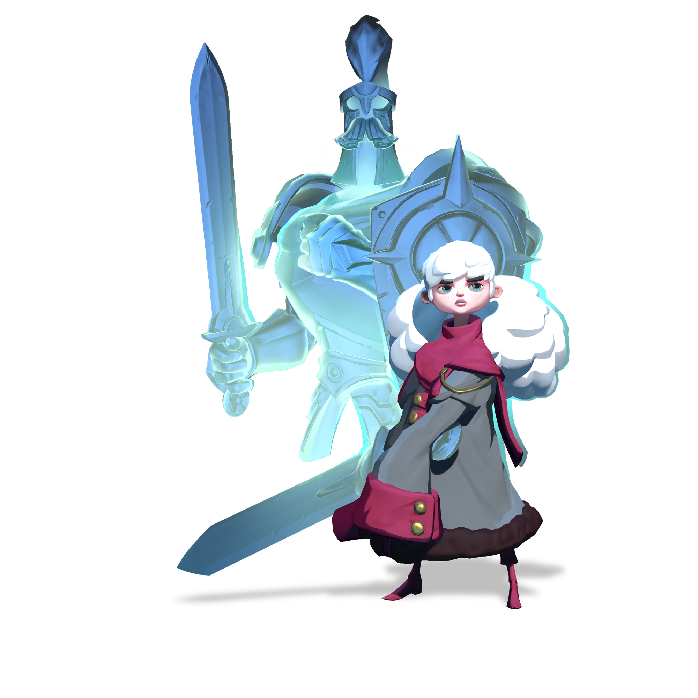

Scroll down to find out more about Aisling!

A brief summary on Aisling:
- Aisling is perhaps one of the better heroes for new players to start with, as she is capable in both offensive and defensive capabilities.
- She is a offensive and defensive tank/meele character, depending each on how you upgrade her abilities.
- Calling Cador, the ghost spirit of her father, in tight situations is definitely always a card that can be played offensively and defensively.
- Even the worst situations can at least be lessened, if not fully vanquished, when Cador is on your side.
- Alternately, using Cador's passive damage boost can help with one on one encounter.
- Most of her abilities are dependent on Cador, so make sure to watch his health so he doesn't die, taking 15 seconds to respond. During this time, you are left vunerable, so it's best to avoid combat.
- Her ablities can inflict cuses or slow down enemies, and as always: Timing is key.
- Aisling's focus skill has a pretty significant impact on the field, destroying lots of enemy HP, and slowing them down signigicantly. It's best to use this ability when you go for a gaurdian wound or vise versa.
- This, coupled with some of her other talents and the ability to switch between defensive and offensive positions, provide you the upper hand when facing the enemy.
-
“Aisling promised to make her father proud, and Sir Cador promised to always protect his daughter. Even Cador's death could not break such promises.”
— Lord Protector Yath, House Aurion
Links
We'll see you on the airship!!